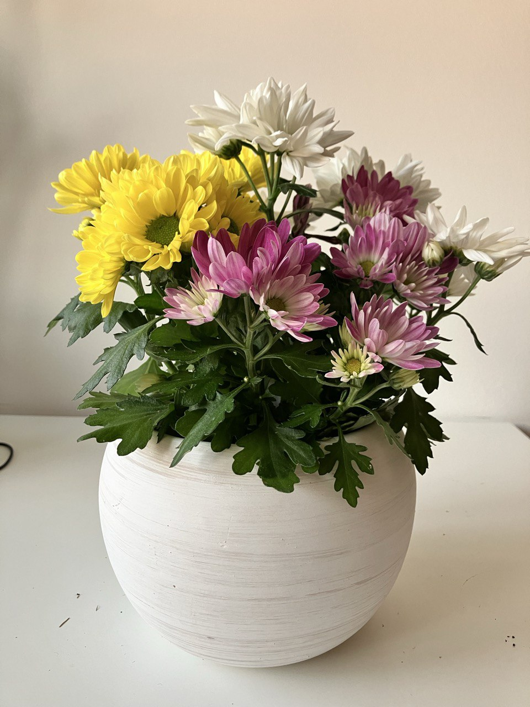

Activity
- Scheduled
- Feeding 18-08-2024
- Repot 01-03-2025
Chrysanthemum Plant Care Guide
Environment
Light
- Bright Light: Chrysanthemums need plenty of bright, indirect sunlight to thrive. They do best with at least 6 hours of sunlight each day.
Soil
- Well-Draining Soil: Use a rich, well-draining soil mix. Adding compost or aged manure can help improve soil quality and drainage.
Temperature
- Cool to Moderate Temperatures: Chrysanthemums thrive in cooler temperatures. Ideal temperatures are between 60-70°F (15-21°C) during the day and slightly cooler at night.
Routine jobs
Watering
- Regular Watering: Keep the soil consistently moist but not waterlogged. Water the plants at the base to avoid wetting the foliage, which can lead to disease.
- Humidity: Chrysanthemums prefer moderate humidity. If the air is very dry, consider misting the plants occasionally.
Feeding
- Regular Fertilization: Feed Chrysanthemums every 2 weeks during the growing season with a balanced, water-soluble fertilizer. Reduce feeding as the plants enter dormancy.
Potting
- Container Choice: Choose a pot with good drainage. Chrysanthemums can be grown in containers or directly in the garden. Ensure the container is large enough to accommodate the root system.
- Repotting: Repot Chrysanthemums annually in the spring to refresh the soil and provide more room for growth.
Pruning and Maintenance
- Pinching: Pinch back the growing tips of Chrysanthemums in early summer to encourage bushier growth and more flowers. Stop pinching about 3 months before the desired bloom time.
- Deadheading: Remove spent flowers regularly to promote continuous blooming and prevent the plant from going to seed.
Troubleshooting
- Common Pests: Watch for pests such as aphids, spider mites, and thrips. Treat infestations promptly with insecticidal soap or neem oil.
- Disease Prevention: Avoid overhead watering and ensure good air circulation around the plants to prevent fungal diseases. Remove any dead or diseased plant material promptly.